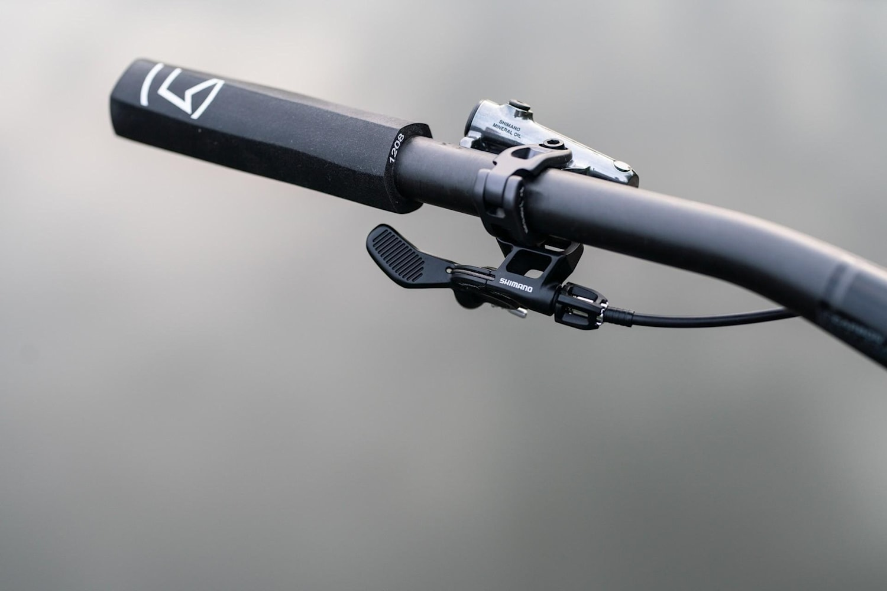

Riparazioni | Contatti | Servizio al consumatore | Nintendo
 Cerca Carrello Wishlist Accedi × Close
Cosa ne dici di...
Tutti i giochi per Nintendo Switch Tutti i giochi per Nintendo Switch in saldo Tutti i giochi per Nintendo 3DS Tutti i giochi di Super Mario Tutti i giochi di The Legend of Zelda Tutti i giochi Pokémon ×Trovaci anche su
FacebookNintendo
Nintendo Switch
Fire Emblem
Nintendo 3DS
The Legend of Zelda
Nintendo eShop Italia
Super Smash Bros.
Splatoon
Tomodachi Life
Animal Crossing
Super Mario
Mario Kart
Nintendo StreetZone Italia
Twitter@NintendoItalia
@NintendoEurope
@SuperMario_ITA
@AC_Fuffi di Animal Crossing: New Leaf
YouTubeSeguici su YouTube
NintendoLaboItalia
InstagramNintendoItalia
NintendoSwitchItalia
My Nintendo Store
NewStyleBoutique
Nintendo StreetZone Italia
TwitchNintendoItalia
LinkedInNintendo of Europe su LinkedIn
PinterestNintendo Online Store
Famiglia Nintendo Switch Indietro Famiglia Nintendo Switch Panoramica Nintendo Switch Nintendo Switch Lite Quale Nintendo Switch è più adatto a te? Confronta i bundle di Nintendo Switch Giochi Nintendo Switch Online Accessori Filtro famiglia per Nintendo Switch Nintendo Labo Giochi Indietro Giochi Panoramica Tutti i giochi Nintendo Switch Nintendo 3DS Dispositivi smart Prossimi giochi Ultime uscite In saldo Portale Nintendo Nintendo eShop Servizio al consumatore My Nintendo Store Indietro My Nintendo Store Panoramica Console Vestiario Giocattoli e collezionabili Arte e multimedia Accessori Altro Impostazioni e servizi Panoramica Ordini Indirizzi Dati dell'account Nintendo Notizie Indietro Notizie Panoramica Nintendo Direct Indie World Portale tornei Super Smash Bros. Ultimate Famiglia Nintendo 3DS Indietro Famiglia Nintendo 3DS Panoramica Contenuti scaricabili Giochi Rimani informato ... Altro Indietro Altro amiibo My Nintendo Nintendolandia Genitori Jobs Storia Nintendo Responsabilità sociale d'impresa Informazioni legali Mappa del SitoServizio al consumatore
Prenota e controlla la riparazione del tuo prodotto Nintendo.Stato della riparazione
Clicca qui per controllare lo stato della riparazione
Seleziona la tua console o il tuo accessorio
Nintendo Switch
Nintendo Switch Lite
Nintendo 2DS e New Nintendo 2DS XL
Controller Joy-Con
Tutte le altre console e Mario Kart Live: Home Circuit
Condividi su:Cambia nazione
België Belgique Deutschland España France Italia Nederland Österreich Portugal Россия Schweiz Suisse Svizzera South Africa UK & Ireland België Belgique Deutschland España France Italia Nederland Österreich Portugal Россия Schweiz Suisse Svizzera South Africa UK & Ireland Nintendo eShop Nintendolandia Genitori Servizio al consumatore Informazioni aziendali Jobs Policy sulla privacy del sito e del My Nintendo Store My Nintendo Store: Termini e condizioni generali di vendita Impostazioni dei cookie Responsabilità sociale d'impresa Contatti© 2021 Nintendo.
×Cambia nazione
België Belgique Deutschland España France Italia Nederland Österreich Portugal Россия Schweiz Suisse Svizzera South Africa UK & Ireland ×Attenzione!
Stai uscendo dal sito di Nintendo of Europe. Nintendo of Europe non si assume responsabilità per il contenuto o la sicurezza dei siti che stai per visitare.
Chiudi Continua ×Non ancora disponibile in Italiano
Il contenuto che hai selezionato non è ancora disponibile in Italiano. Vuoi vedere la versione inglese?
No grazie Sì ×Sondaggio
Gentile visitatore,
Grazie per aver visitato il sito Nintendo! Sei stato scelto casualmente per prendere parte ad un breve sondaggio. Dedicando qualche minuto del tuo tempo a condividere i tuoi pensieri e le tue opinioni, ci aiuterai a migliorare il nostro sito.
Naturalmente, qualsiasi informazione da te fornita nel sondaggio sarà trattata con riservatezza.
Il tuo team Nintendo of Europe
Declina l'invito Partecipa al sondaggio ×Trovaci su Facebook
Nintendo
Nintendo Switch
Fire Emblem
Nintendo 3DS
The Legend of Zelda
Nintendo eShop Italia
Super Smash Bros.
Splatoon
Tomodachi Life
Animal Crossing
Super Mario
Mario Kart
Nintendo StreetZone Italia
×@NintendoItalia
@NintendoEurope
@SuperMario_ITA
@AC_Fuffi di Animal Crossing: New Leaf
×YouTube
Seguici su YouTube
NintendoLaboItalia
×Nintendo Italia su Instagram:
NintendoItalia
NintendoSwitchItalia
My Nintendo Store
NewStyleBoutique
Nintendo StreetZone Italia
×Twitch
Nintendo Italia su Twitch:
NintendoItalia
×Nintendo of Europe su LinkedIn
×Nintendo Online Store
×